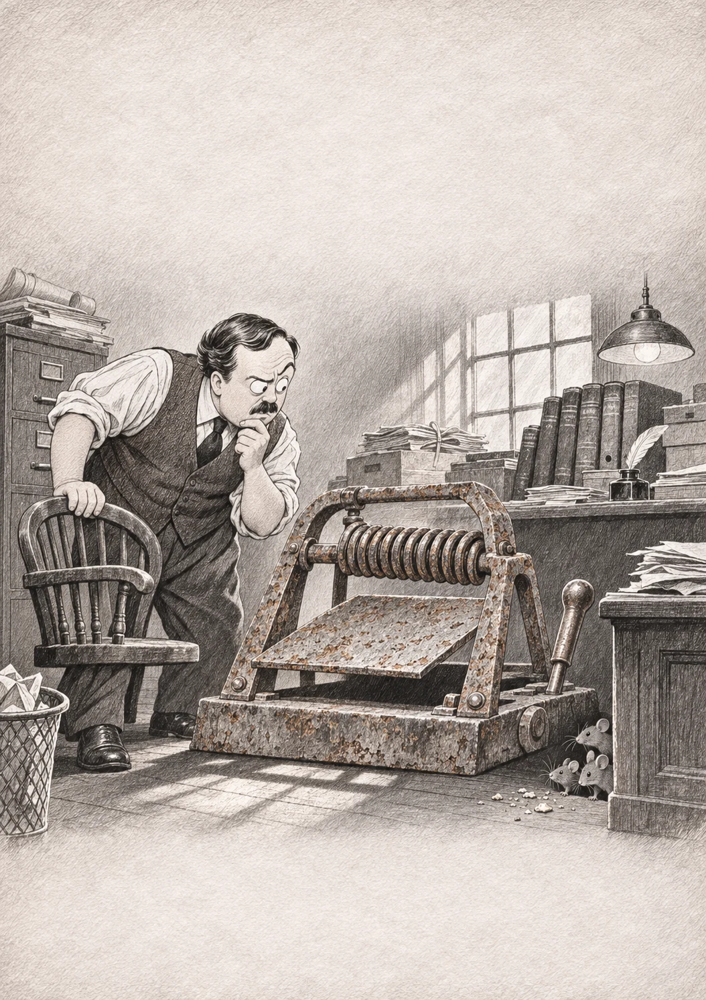
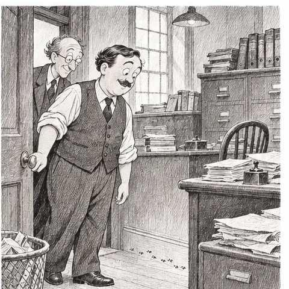
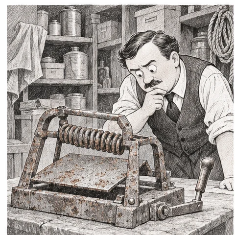
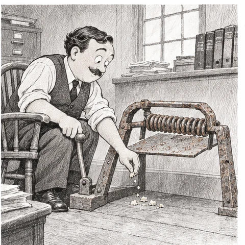
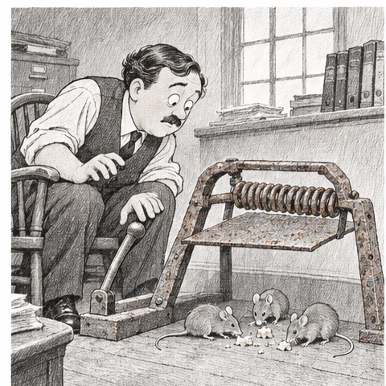
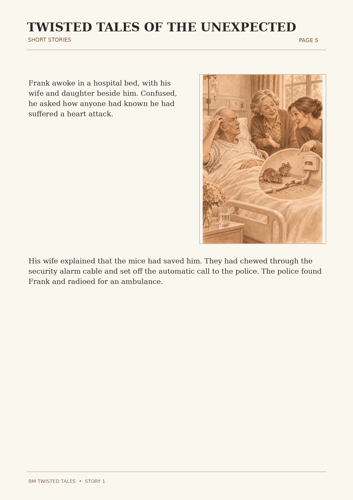
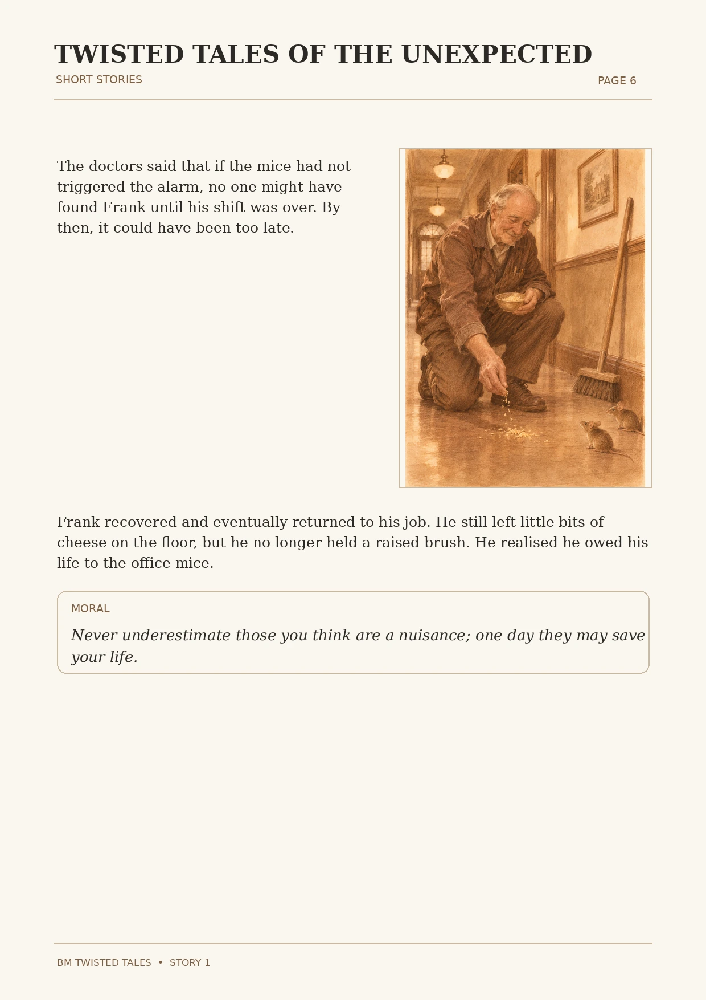
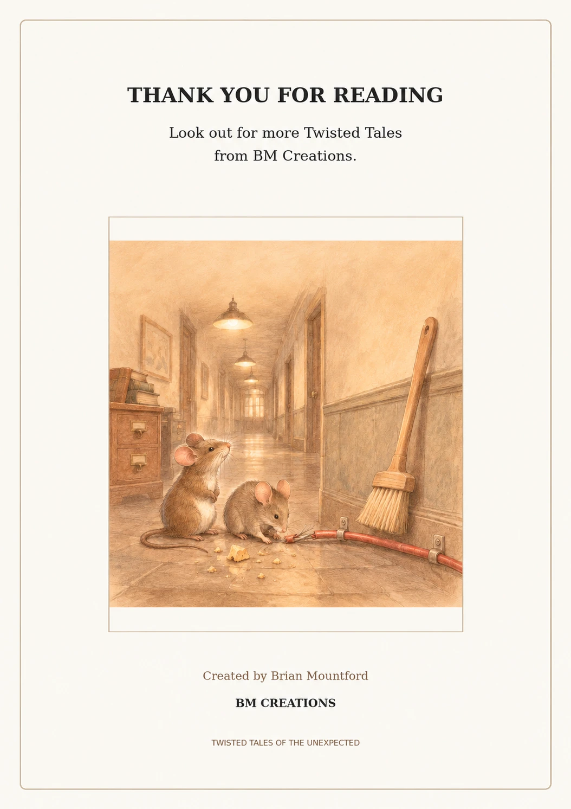

BM Twisted Tales
Tale No. 1
The Office Mice


Frank and I returned to the office the next day with a plan. The mice had been making themselves at home for weeks, and Frank was determined to catch them.

He found an old spring-loaded contraption in the storeroom and set it up above the place where we had seen them feeding. The springs were rusty, though, and the thing didn’t work as smoothly as it should. Frank gave it a few tugs, listened to it creak, and decided it would do.

He scattered cheese crumbs on the floor, then sat quietly in his chair with one hand ready to release the mechanism. We waited.

For almost half an hour, nothing happened. Then one mouse appeared, followed by another. Soon they were nibbling away, quite unaware of Frank watching them. Frank grinned and reached for the release.

At that moment, one little mouse scurried across his shoe and up his trouser leg. Frank jumped out of his chair with a shout. The rusty spring gave a sharp snap.

The heavy contraption crashed down—right onto the chair Frank had just left. It smashed through the seat and clattered across the floor. Frank stood frozen, staring at the wreckage. If he had stayed where he was, it would have landed on him. The mice vanished into the wall. Frank looked down at his torn shoe and then at the broken chair. “Well,” I said, “I suppose you owe them a thank-you.” Frank never set another trap in that office. From then on, there was always a little dish of cheese in the corner. The mice had saved his life—and Frank, at last, had learned to share.

Look out for other Twisted Tales from BM Creations.
Every tale has a turn waiting at the end.
Public flipbook link:
https://bm-creations-public.vercel.app/twisted-tales-tale-1/
Scan to open Page 59 in the Main Entrance:

Use the buttons or your keyboard’s left and right arrow keys to turn pages.